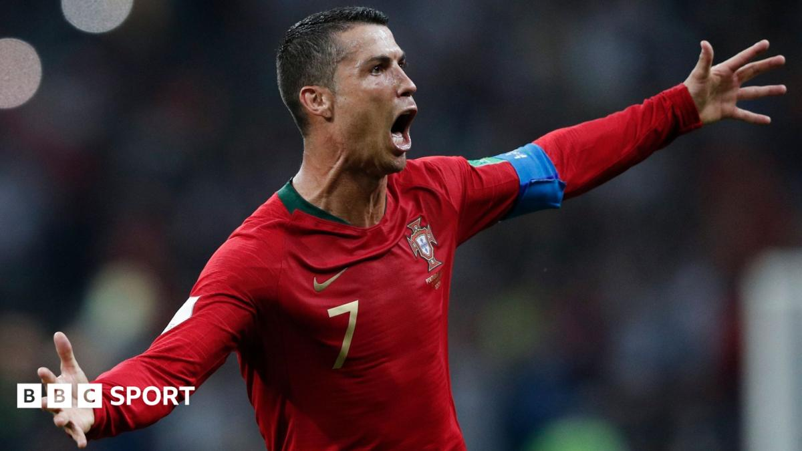

Arrogant Celebration After 2018 World Cup Hat-Trick
The hat-trick against Spain: In the 2018 World Cup group stage, Portugal drew Spain 3-3 as Ronaldo scored all three — a penalty, a left-footed thunderbolt, and an 88th-minute free-kick equaliser. It was the first hat-trick ever scored against Spain at a World Cup, a truly phenomenal individual display.
Cocky celebration: Yet more viral than the goals was his post-goal chin-stroking celebration, widely read as an 'I'm the best in history' declaration. The swaggering pose trampled the line between 'confidence' and 'arrogance' to pieces.
Self-anointed 'GOAT': In post-match interviews and subsequent documentaries Ronaldo repeatedly styled himself the 'best player in history', even projecting an air of 'no peer'. Self-coronation is born of ability, but it also gave off a discomforting narcissism.
Hero versus team exit: Ironic, then, that despite this deified hat-trick, Portugal still went out in the round of 16 at that World Cup. One man's brilliance could not mask the team's mediocrity, and the 'best in history' performance could not deliver a World Cup trophy.
Messi mirror image: The media inevitably compared him to Messi, who was equally outstanding at that year's World Cup but far more restrained. Some fans read Ronaldo's bravado as authenticity; others as the pathology of excessive self-centredness.
The danger of 'I am history': When an athlete wears 'best in history' on his sleeve and bakes it into his celebrations, he is in effect kidnapping historical judgement. True greatness is usually defined by future generations, not self-stamped. Ronaldo's arrogance is precisely the common failing and weakness of this kind of superstar.
Verdict: A spectacular hat-trick against Spain, yes, but paired with cocky celebrations that laid bare Cristiano's runaway ego. The 2018 World Cup ended as a collective failure, despite the goal-laden opener.